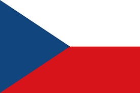

Nyelvek amiket beszélek
Az angol tanulást 6 évesen kezdtem meg, de a komolyabban vele való foglalkozást csak 14 évesen kezdtem meg Középiskolában. Ez időszak alatt elértem a C1-es nyelvvizsga szintjét bár ezt sosem próbáltam megszerezni és csak B2-es nyelvvizsgával rendelkezek.

Németül 5 évesen elkezdtem tanulni,de 9 évesen abbahagytam majd 12 évesen újrakezdtem, de ezt is csak középiskolában 14 éves koromtól kapott megfelelő hangsúlyt. Ebből a nyelvből rendelkezek B2-es nyelvvizsgával, de ez jelen pillanat szerint a maximum tudásom.

A cseh nyelvet muszájból kezdtem tanulni 9 évesen, ugyanis ekkor kiköltöztem a családommal Csehországba ahol nemzeti nyelv révén nem volt más opció mint megtanulni. Csehországban 5 évet laktam 9-14 éves korom között, ami azt eredményezte, hogy anyanyelvi szinteb megtanultam a nyelvet és a C1-es nyelvvizsgát is megszereztem.